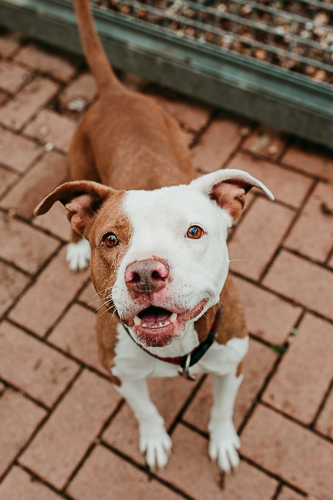
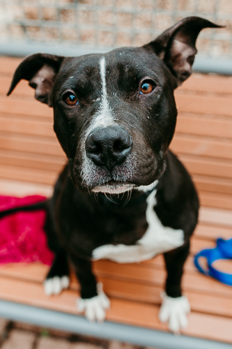
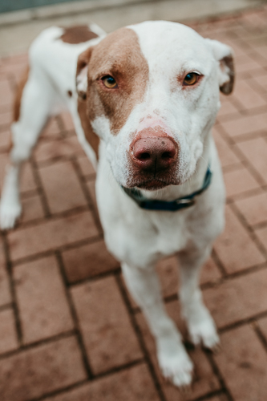
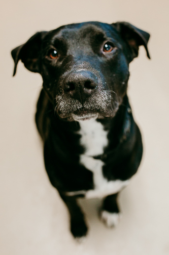
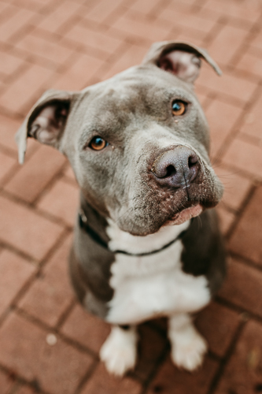
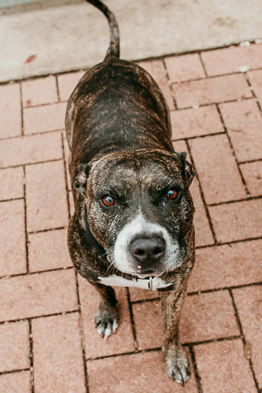
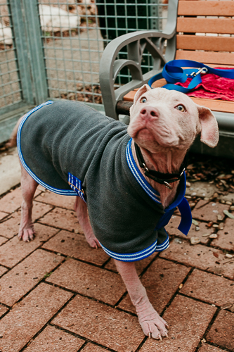
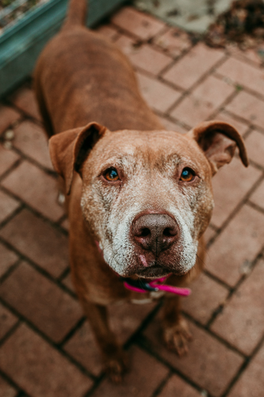

Charlie is a super friendly pup. He loves playing with toy ropes and has a ton of energy!

Bailey
Age: 2 years
Bailey is a very hyper dog. Her tail wags so much that it should be registered as a lethal weapon. She loves dancing on her hind legs and spinning in circles!

Sox
Age: 1 year
Sox loves to sit in chairs like a human. His favorite activity is sitting and staring at you until you throw his ball.

Libby
Age: 5 years
Libby is a docile pup who loves getting her belly rubbed. She loves the rain and burowing under as many blankets as possible!

Watson
Age: 4 years
Watson is notorious for trying to open doors with his paws. He never wants to be too far from you and his newly grey whiskers only add to his wisdom.

Velvet
Age: 3 years
Velvet is an absolute sweetheart. She knows how to sit, lie down, and is great at tugging on the leash when she wants you to hurry up and take her for a daily walk.

King
Age: 8 years
King definitely adheres to his name. He's a little on the chubby side, but that just means there's more of him to love! He's a vocal senior dog who still enjoys weekly walks around the neighborhood.

Princess Peach
Age: 6 months
Princess Peach is working on growing her blonde locks back after a battle with mange. She is excited to get outside to explore and grow into her giant paws! She loves back scratches and running around in the yard.

Sichere
Age: 9 years
Sichere is a senior dog who is ready for a forever home. She loves playing with any toy you give her and has plenty of energy to go on short adventures. Her favorite food is breakfast tacos, if you happen to drop one next to her.